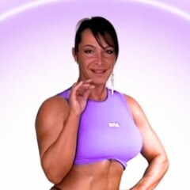
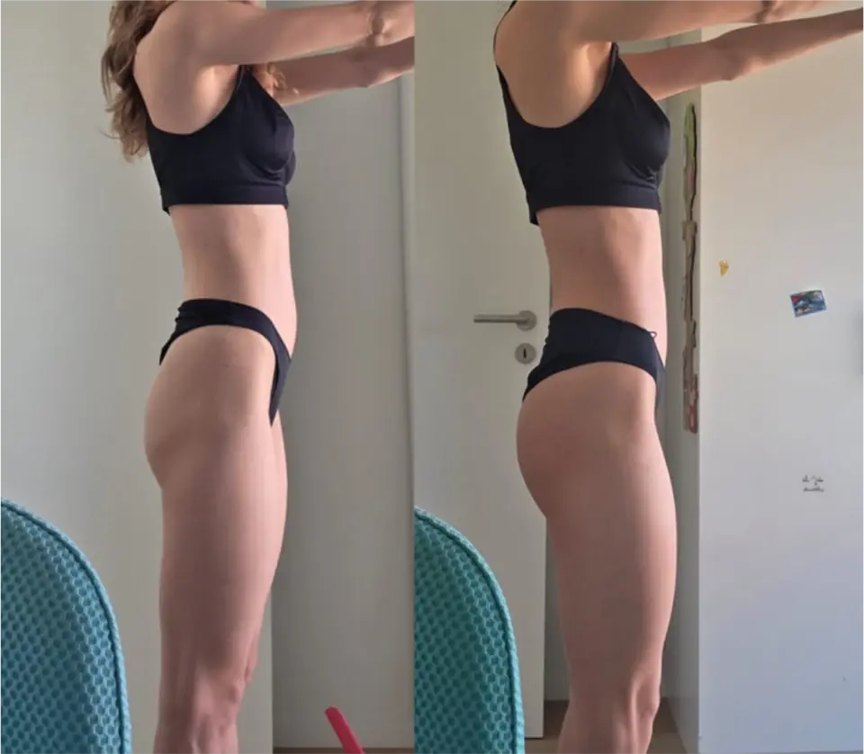
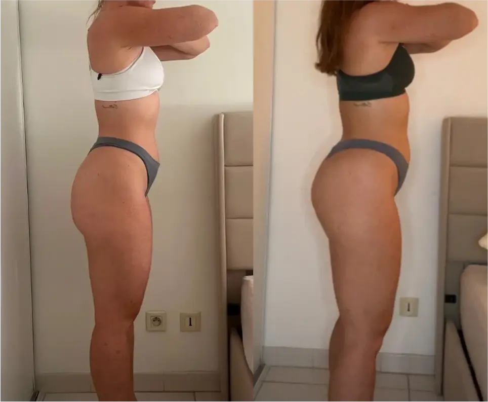
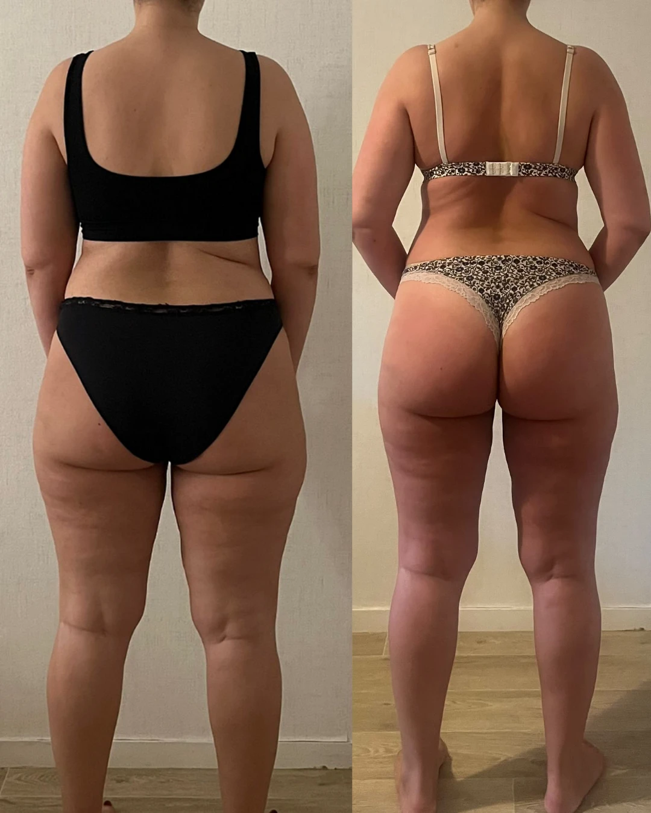

Tu ne manques pas de motivation. Tu avances à l'aveugle.
Je ne vais pas t'envoyer une séance de plus. Des séances, tu en as déjà fait des dizaines. Ce qui te manque, ce n'est pas un exercice : c'est de savoir où tu vas, ce que tu cibles et ce que tu manges pour y arriver.

Un mot de MariePendant notre appel, j'ai entendu une femme régulière, qui fait des efforts. Le problème n'est pas toi. Cette page, c'est ce que je n'ai pas eu le temps de te montrer. Prends 5 minutes, réponds honnêtement, et regarde ce qui en ressort.
- Pas de structureDes séances au feeling, qui changent souvent, sans rien noter.
- Pas de ciblageDes exercices « fessiers »… qui font surtout travailler les cuisses ou le dos.
- Pas de dièteTu manges « healthy » ou « léger », sans savoir si ça construit quoi que ce soit.
Est-ce que tu sais vraiment ce que tu fais ?
9 questions, 3 piliers. Réponds pour ta situation d'aujourd'hui, pas pour ce que tu aimerais faire. « Je ne sais pas » est une réponse valable… et souvent la plus révélatrice.
Combien de séances as-tu déjà faites sans boussole ?
Bouge les curseurs pour ta situation. Ce n'est pas pour te culpabiliser : c'est pour voir ce que ta régularité mérite.
Ces heures ne sont pas perdues : elles prouvent que tu sais être régulière, et c'est la chose la plus dure à apprendre. Ce qui manque, c'est la direction. Si rien ne change, dans 6 mois tu auras fait 0 séances de plus… au même endroit.
8 idées qui te gardent à l'aveugle
Je les entends dans presque tous mes appels. Pour chacune, dis-moi honnêtement si tu y crois, puis découvre ce qui se passe vraiment dans ton corps.
Même effort. Pas le même résultat.
Ce qui fait la différence, ce n'est pas l'intensité de la transpiration. C'est la précision.
À l'aveugle
Ce que je vois chez la plupart des femmes en appel
- ✕Une séance trouvée sur Insta ou TikTok, différente chaque semaine
- ✕Squats à l'élastique 4 × 25, « jusqu'à ce que ça brûle »
- ✕Kickbacks à la poulie, poids pris au hasard
- ✕Hip thrust qui se sent surtout dans les cuisses et les lombaires
- ✕Rien de noté : impossible de savoir si on progresse
- ✕Le midi une salade, le soir « léger » pour ne pas grossir
Résultat : fatiguée, courbaturée… et le même reflet dans le miroir.
Pilotée
Ce qu'on met en place en coaching
- ✓Le même programme 8 à 12 semaines, construit pour ta morphologie
- ✓Hip thrust 4 × 6-10, charge notée : 62,5 kg, +2,5 kg vs la semaine dernière
- ✓Chaque exercice a un rôle : haut du fessier, galbe latéral, jonction fessier-ischio
- ✓Placement corrigé en vidéo : tu sens tes fessiers, pas tes cuisses
- ✓Séries arrêtées à 1-2 répétitions de l'échec, pas « à la brûlure »
- ✓Calories et protéines calées sur ton objectif, ajustées chaque semaine
Résultat : chaque semaine, tu sais si tu avances. Et pourquoi.
Un fessier se construit sur 3 piliers en même temps
Tu peux avoir le meilleur exercice du monde : s'il manque un pilier, tout le reste tourne à vide. Et c'est pour ça qu'un PDF ou un programme à 49 € t'a déjà déçue.
Structure
Un programme fixe, des charges notées, une progression planifiée semaine après semaine.
Sans elle : tu tournes en rond, même en étant régulière.
Ciblage
Le bon placement, la bonne amplitude, le bon effort : le fessier fait le travail, pas les cuisses.
Sans lui : tu muscles autre chose que ce que tu veux.
Diète
Assez d'énergie et de protéines pour construire, sans prendre de gras inutile.
Sans elle : ton corps n'a pas les matériaux pour construire.
Structure + ciblage + diète, ajustés chaque semaine par quelqu'un qui regarde tes chiffres : c'est ça, ne plus avancer à l'aveugle.
Quand je juge en compétition, je vois en quelques secondes ce qui manque à un physique. Seule, tu ne peux pas voir tes propres angles morts : personne ne le peut, même pas moi. C'est pour ça que même les athlètes ont un coach.
Parlons-en franchement
« Je vais d'abord essayer seule avec ce que j'ai appris. »
C'est possible, et je le respecte. Pose-toi juste une question : qu'est-ce qui sera différent des 18 mois que tu viens de passer ?
Tu auras les mêmes angles morts, et personne pour les voir. Savoir ce qu'il faut faire et réussir à le faire seule, ce sont deux choses très différentes. Sinon, tout le monde aurait le corps qu'il veut.
« Ce n'est pas le bon moment. »
Tu vas déjà à la salle. Le coaching ne t'ajoute pas d'heures : il rend utiles celles que tu fais déjà.
Le « bon moment » arrive rarement tout seul. En attendant, chaque semaine compte quand même, dans un sens ou dans l'autre.
« J'ai peur que ça ne marche pas sur moi. »
Cette peur est légitime, surtout si tu as déjà été déçue. Mais regarde la différence : un programme générique ne regarde jamais tes chiffres. Moi, je les regarde chaque semaine.
Si quelque chose ne fonctionne pas pour ton corps, on le voit en 2 semaines, pas en 2 ans, et on ajuste. C'est tout l'intérêt d'un suivi.
« Je dois en parler à mon conjoint / ma famille. »
C'est normal, et c'est même une bonne idée. Montre-lui cette page et ton résultat au test : ça l'aidera à comprendre que ce n'est pas un caprice, mais une méthode.
Et s'il ou elle a des questions, on peut en parler ensemble pendant notre prochain échange.
« C'est un budget. »
Oui, c'est un investissement, je ne vais pas te dire le contraire. Mais avancer à l'aveugle coûte aussi : l'abonnement à la salle, les compléments, les programmes déjà achetés, et surtout les mois.
Et si ce n'est vraiment pas possible pour toi aujourd'hui, dis-le-moi simplement. Je préfère te donner tes 2 ou 3 priorités pour avancer seule plutôt que de te laisser sans direction.
Ce qui change quand c'est piloté
Ces femmes s'entraînaient déjà avant. Elles n'ont pas fait plus d'efforts : elles ont fait les bons, avec une assiette adaptée et un suivi chaque semaine.



Dans 6 mois, tu peux être au même endroit… ou enfin voir la différence.
Lors de notre prochain échange, on part de ton résultat au test et je te montre concrètement ce que je mettrais en place pour toi :
- ✓Ta structure : le programme et la progression adaptés à ta morphologie et ton matériel
- ✓Ton ciblage : les exercices qui vont vraiment chercher tes fessiers, et comment les sentir
- ✓Ta diète : combien manger pour construire, sans régime ni frustration
- ✓Ton suivi : bilan chaque semaine, correction de ta technique en vidéo, messagerie avec moi
Sans engagement. Si ce n'est pas fait pour toi, je te le dirai honnêtement.